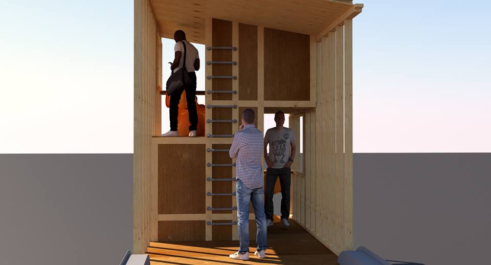
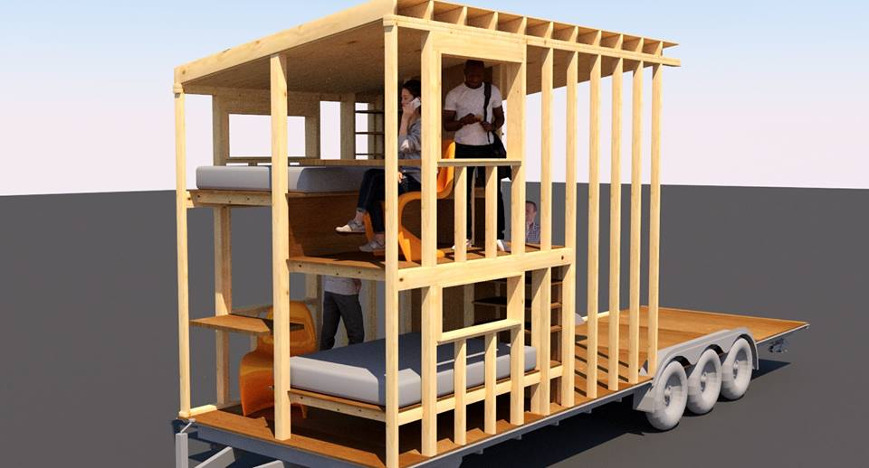
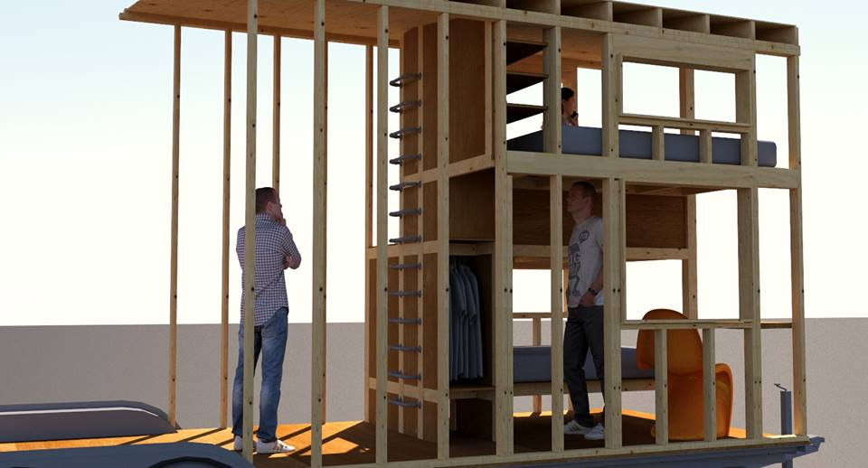
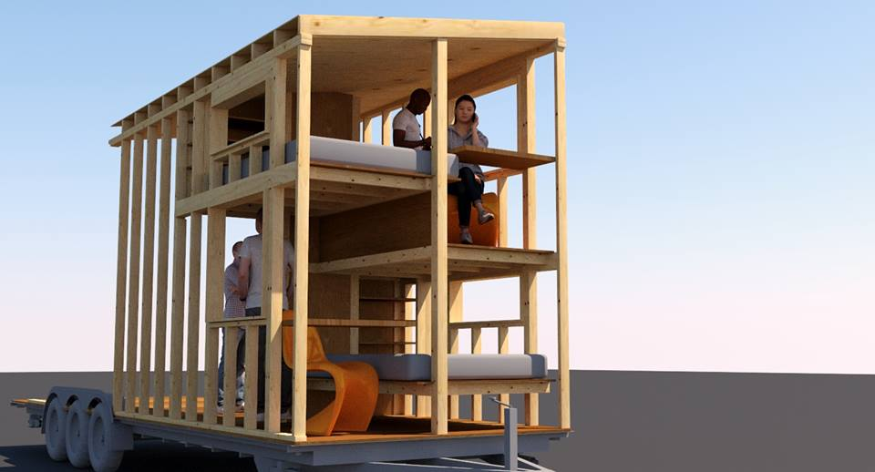
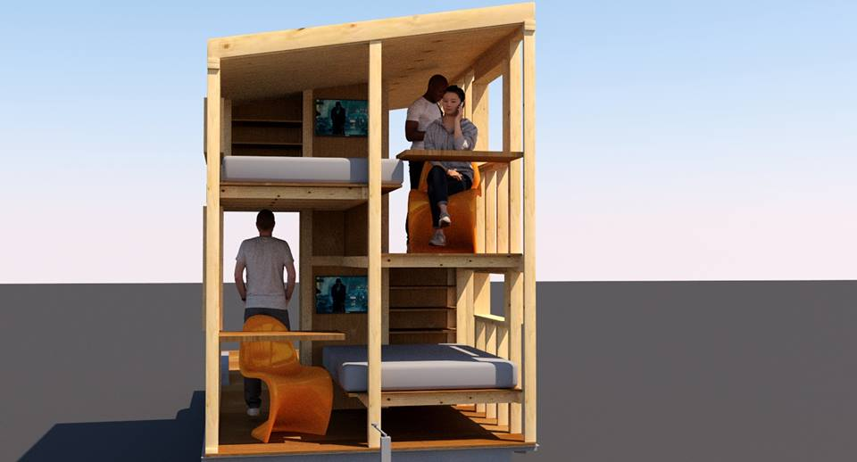
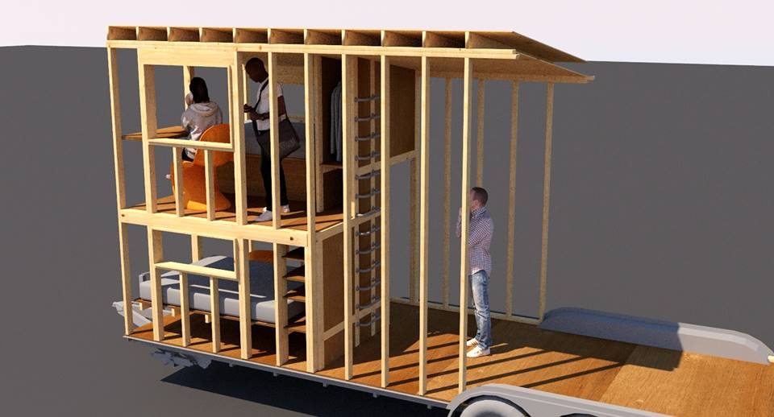

trailer habitats revision 8114
^ Projects infobox ^^
| image | |
| designers | |
| date | |
| vitamins | |
| materials | |
| transformations | |
| lifecycles | |
| tools | [[wrenches|Wrenches]] |
| parts | [[frames|Frames]], [[nuts|Nuts]], [[bolts|Bolts]], [[end_caps|End caps]], [[wheels|Wheels]], [[keyed_shafts|Keyed shafts]], [[axial_bearings|Axial bearings]], [[shaft_collars|Shaft collars]], [[wheel_hubs|Wheel hubs]] |
| techniques | [[tri_joints|Tri joints]] |
| files | |
| suppliers | |
| git | |
Introduction
A caravan, travel trailer, camper, tourer or camper trailer is towed behind a road vehicle to provide a place to sleep which is more comfortable and protected than a tent (although there are fold-down trailer tents). It provides the means for people to have their own home on a journey or a vacation, without relying on a motel or hotel, and enables them to stay in places where none is available. However, in some countries campers are restricted to designated sites for which fees are payable.
Challenges
Approaches






<youtube>6vFAqlSvXTo</youtube>